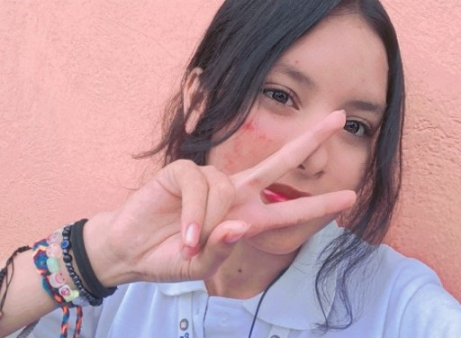

Estudiante del instituto Fermín Naudeau del bachiller en tecnología del undécimo “C” de 17 años de edad, nacida el 29 de junio del 2007 en Guatemala, Guatemala.
Hija de: Erwin Menchú y Melissa Merlos.
Soy una chica con bastantes metas por cumplir, soy scout y pertenezco al grupo 29 de panamá sur, también soy miembro de la Iglesia de Jesucristo de los últimos días, vine a Panamá en febrero del 2024, me gusta mucho pasear por la Cinta costera, uno de mis pasatiempos favoritos es asistir a mis reuniones scout todos los sábados, me gusta cantar, bailar, leer, y pasar tiempo con mis amigos.
Me gustan todas las películas de Disney, me encanta viajar, en total he visitado 7 países en mi corta vida, soy una persona que no conoce límites hace un año me caí de un árbol de dos metros tratando de alcanzar un pañuelo y perdí la memoria por un día, este año en los exámenes del primer trimestre me atropello un taxi saliendo del colegio, y el 23 de sep. de este año me esguince el tobillo derecho saliendo del acto cívico, ahora ando coja xd.